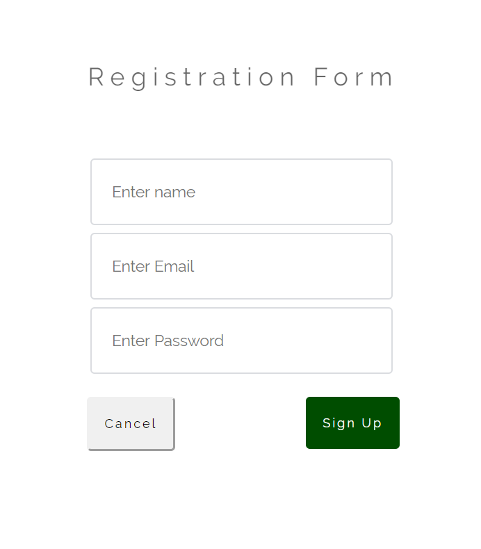
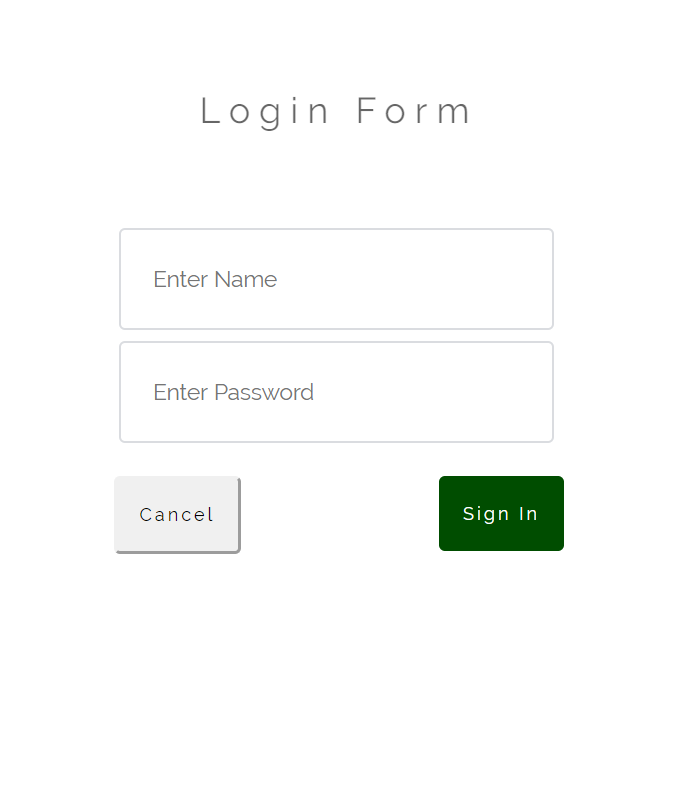
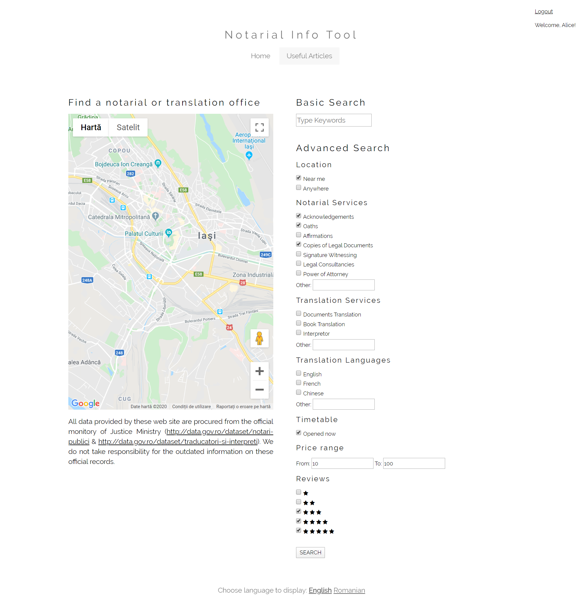
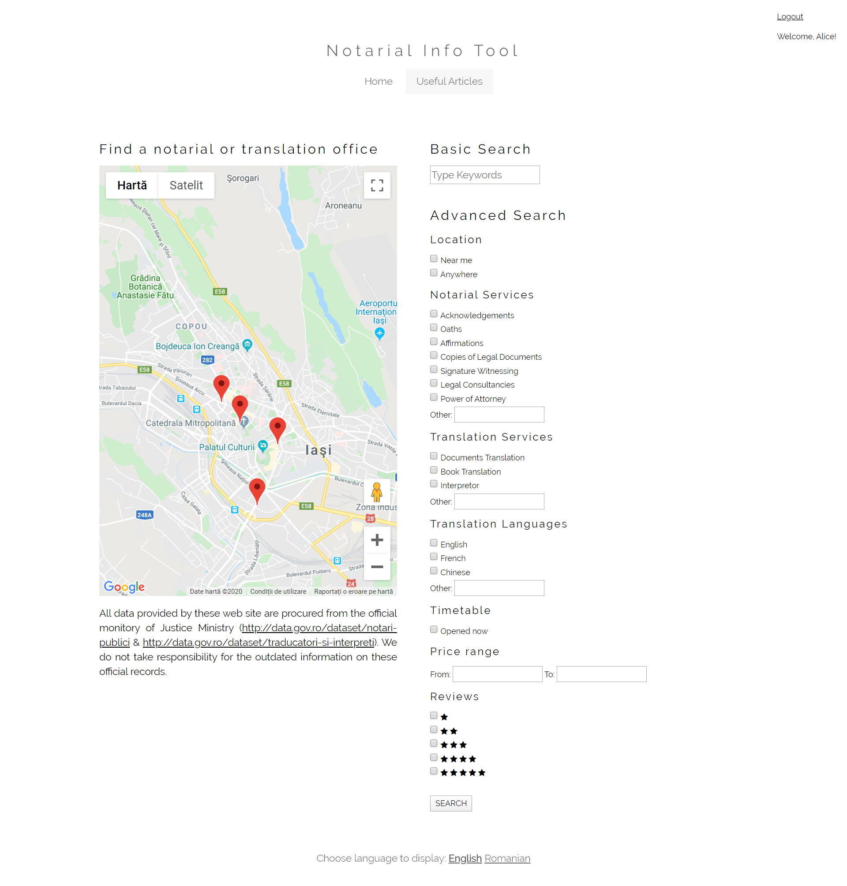
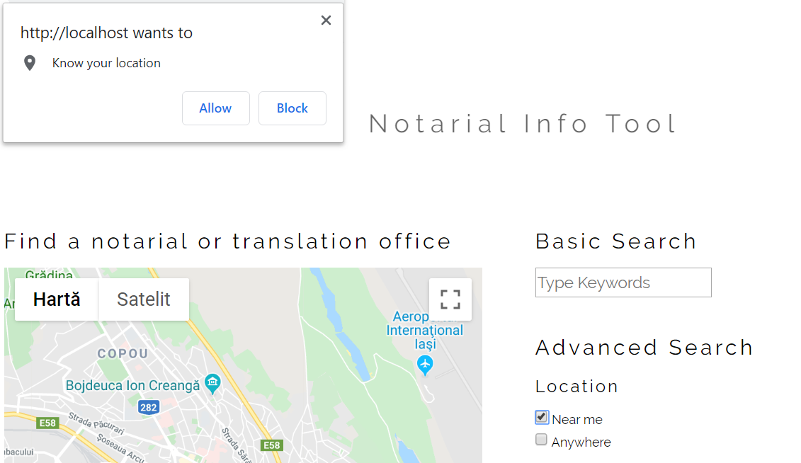
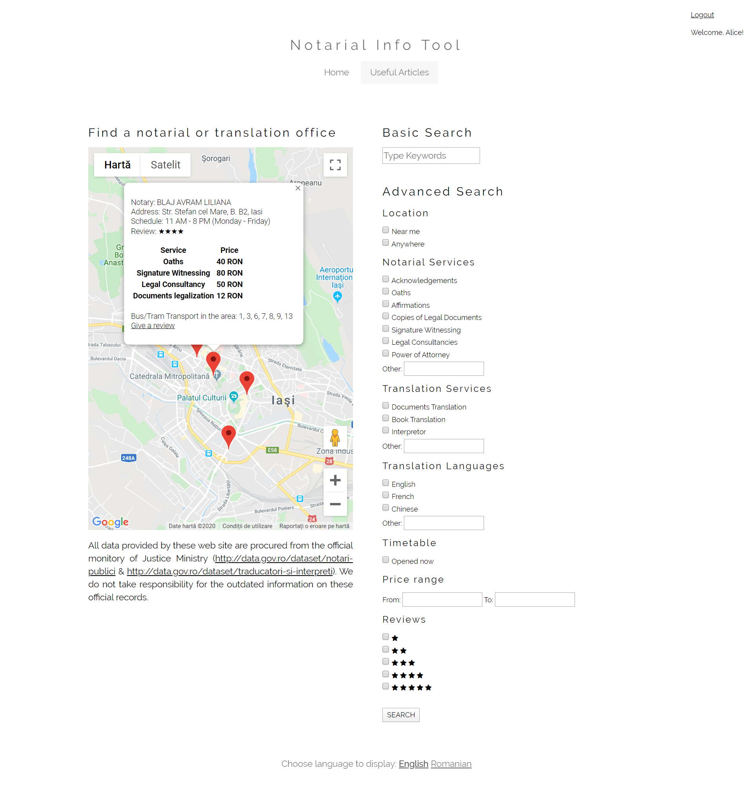
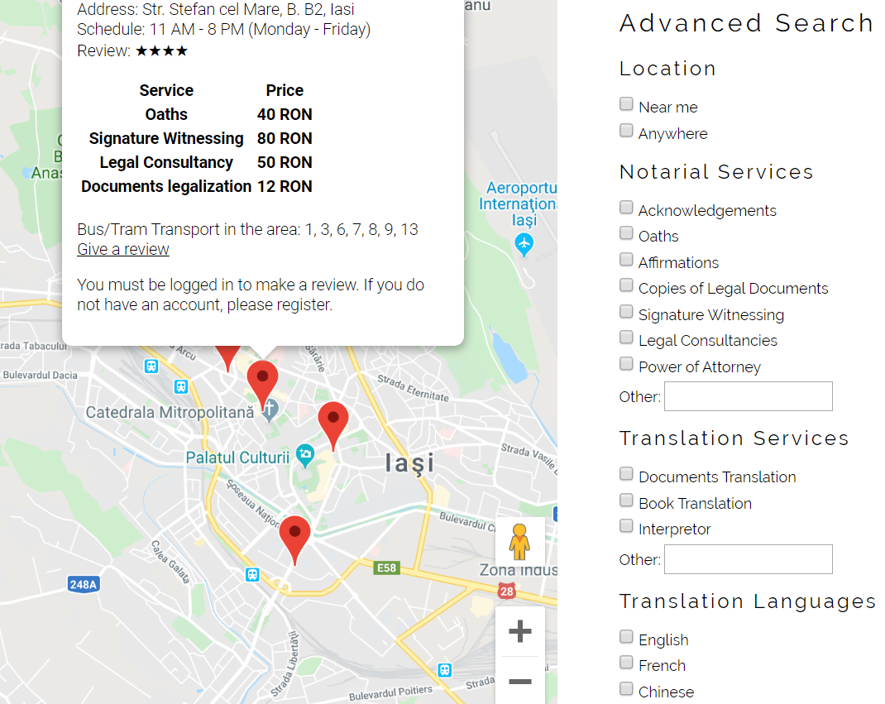
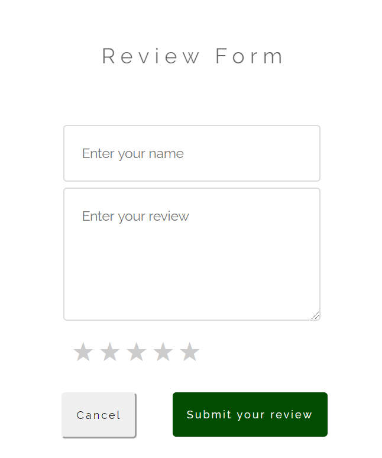
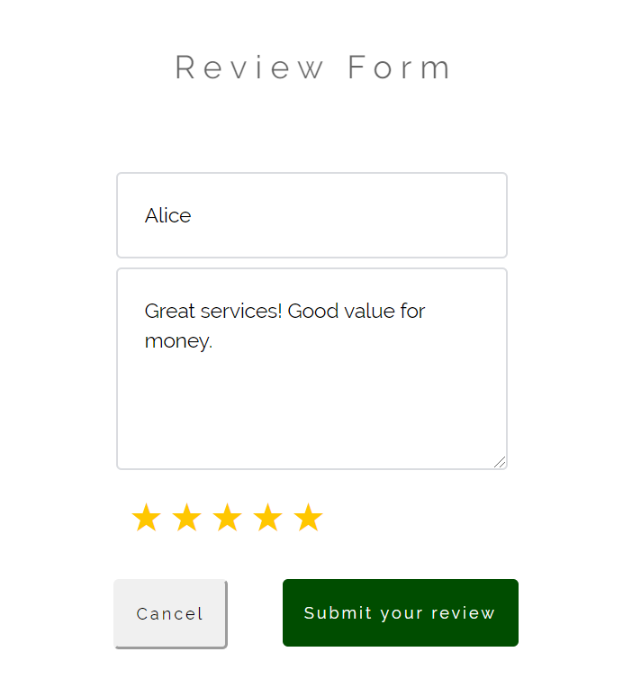

Community Draft
The Notarial Info tool is a web application designed to support the process of locating notarial offices and services in Romania. This tool is dedicated for both local and foreign citizens who might be in the need of these services. Besides the functionality of providing the office location, this tool offers useful information on this domain, explaining some of the most common situations when notarial support is needed and what should the files for these situations look like (in terms of legal consultancy, documentation and so on).
The Noti User Guide is created in order to familiarize its user with the provided functionalities of the web application:
The Notarial Info tool is a web application which offers its users the option to sign up for an account in order to have access to a suite of useful links to articles regarding the legal domain. These articles are meant to offer a clearer image of why notarial offices are at use and for what exactly, but in the same time they are selected to guide people into a better understanding of the services they might need. Even if it's a situation regarding real estate purchases, family inheritance, being a legal tutor for someone or acting leagally on behalf of somebody else, these articles can offer more information about what needs to be done.
|
 |
The registration form requires a name of user's choice for his/her profile on the web application. The e-mail is only required for the validation of the user account. Password is necessary only for login into the application. |
|
 |
The login form requires the name and password of a registered user. |
Once the user has registered and logged in with the correct credentials, he/she will have access to the Useful Links section, will have the option to logout instead of login/register option and will be greated for login into the web application:
The Notarial Info tool offers its users a menu for multiple search, each criteria having its own input fields for the user’s preferences. The user has the option to set the following filters: choosing the service(s) he/she is in the need of, the location, the price range and the review grade of the notarial/translation office.
Once the filters are selected, by pressing button "SEARCH", the notarial/translation offices with all user preferences respected will be displayed through markers on the Google Map API.
If the user is selecting the location filter to Near me option, then he/she will be asked to agree to share his/her location.
The Notarial Info tool is using one of the Google Map services for displaying the search results on a map. After a search is complete and the offices following the user's preferences are visible through markers on the map, the user only has to click on one of the markers to get more informations about it (name, schedule, address, services and prices rating and transportation available in the near by area).
The Review option of the Notarial Information Application is meant for the users logged into the application, whose location was tracked in the proximity of the office he/she wants to write a review for. Therefore, if a visitor wishes to publish a review, he won't be allowed to do that, but ask nicely to create an account and log in if he/she wishes to write the review.
For a logged in user, the link provided by the popup from the marker he clicked on on the map, a review form will be displayed asking for a name, the review itself and a star grade from one to five.
 This is the first version of the Notarial Info tool and more improvements will be added to the application. The known issues of the current version are: